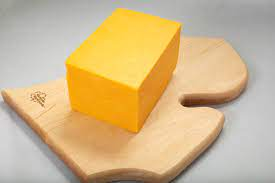

Block o Cheese
main page

Ingredients
- Wheel of cheese
- Hill
- Transportation
- Strainer
Instructions
- Wash your hands 5 times and then spin around in a circle
- Go to your local cheese wheel factory that is in your town
- Buy a wheel of cheese
- Take your wheel of cheese home
- Roll it down your nearest hill within 2 hours
- Cut the wheel in half
- Take that half and melt it in a pot
- Pour that now melted cheese through a strainer into the drain
- Take the other half and cut it into a cube shape
- There you go you have your block of cheese